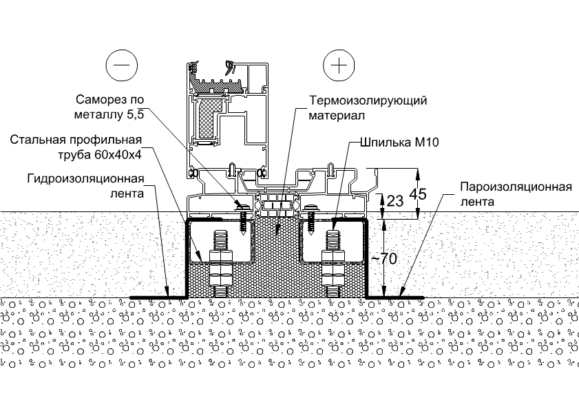

При построении калитки в системе С43, замок ставить STUBLINA 3021.00 или аналог ALB3021.00, ответную планку ставить STUBLINA 3016.00 или аналог ALB3016.00, потому что другие замки устанавливаются глубоко в профиле и язычек замка не достает до ответки.
При необходимости установить электромеханическую защелку, заказать нужно вместо стандартной ответной планки защелку ABL0609 (другие защелки не подходят т.к. рабочая часть цепляется за наплав рамы) и универсальную ответную планку ABL0617, также замок должен быть нажимной а ручка офисная (иначе какой смысл?).
При использовании петель со скрытым креплением Rollenband нужно учесть что петля дает больший зазор между рамой и створкой на 2мм от стандартных 5мм, поэтому створки нужно делать уже на 2-3мм.
При расчете и отдаче в работу конструкций системы SL160, с нашим монтажом, нужно учесть дополнительно нижний монтажный узел, стоимость которого ориентировочно равна 3000руб. на конструкцию. При отдачи в работу заказывать материалы на этот узел тоже нужно.
При работе с фасонками и покрасками обращать внимание на комментарии и вообще на заказ.
Например, делая фасонку, посмотреть нет ли в заказе покраски, делая покраску обращать внимание не только на комментарии, но и смотреть что вообще можно красить, и при возникновении вопроса надо ли то или иное красить спрашивать у менеджера.